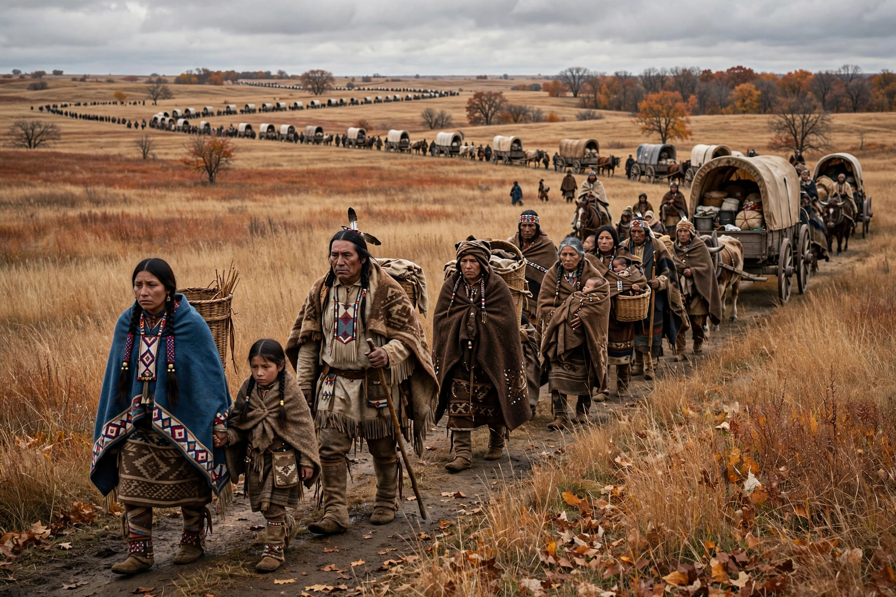

The Trail of Death was the forced removal by militia of about 859 Potawatomi Native Americans from Indiana to Kansas under the policy of Indian removal. Beginning on 4 September 1838, a volunteer militia under General John Tipton rounded up the Potawatomi of Chief Menominee's band at Twin Lakes in Marshall County, Indiana — despite Menominee's refusal to sign the treaties that purported to cede his land — and marched them some 660 miles (1,060 km) over 61 days to the Osawatomie area of present-day Kansas. More than 40 Potawatomi died on the march, most of them children, of typhoid fever, exhaustion, heat and contaminated water.

| Trail of Death | |
|---|---|
| Dates | 4 September – 4 November 1838 |
| Route | Marshall County, Indiana to Osawatomie, Kansas |
| Distance | ~660 miles (1,060 km) |
| People displaced | ~859 Potawatomi |
| Deaths | More than 40 |
| Commanded by | Gen. John Tipton |
The Indian Removal Act of 1830 authorised the federal government to exchange Native lands in the eastern states for territory west of the Mississippi. In a series of treaties in the 1830s, many Potawatomi bands ceded their Indiana land, but Chief Menominee refused to sign, arguing that the reservation at Twin Lakes had been guaranteed to him by the Treaty of Tippecanoe. Governor David Wallace set 17 August 1838 as a deadline for the band to leave. After settlers alleged thefts and violence — and after unknown parties burned a Potawatomi chapel and cabins — Wallace authorised Tipton to remove the band by force.
Surrounding the village after Sunday Mass on 2 September, Tipton's militia held the Potawatomi at gunpoint, burned their village, and began the march two days later. Father Benjamin Petit, the band's priest, accompanied his parishioners and kept a journal of the journey, describing heat, dust, sickness and graves dug along the trail. The caravan crossed Indiana and Illinois — passing through Danville, Monticello and Springfield — and crossed the Mississippi near Quincy before traversing Missouri. The survivors reached Kansas on 4 November 1838. Father Petit, broken in health, died in St. Louis in February 1839 at the age of 27.
Since 1988, descendants and supporters have retraced the route on a commemorative caravan every five years, and historical markers — many erected through the efforts of historian Shirley Willard — mark the campsites across the four states. The Trail of Death was designated a Regional Historic Trail by Indiana in 1994 and a National Historic Trail by Illinois in 2000. A statue of Chief Menominee stands near Twin Lakes at the site of the original village.
Potawatomi · Indian removal · Chief Menominee · Trail of Tears
From Wikipedia, the free encyclopedia.